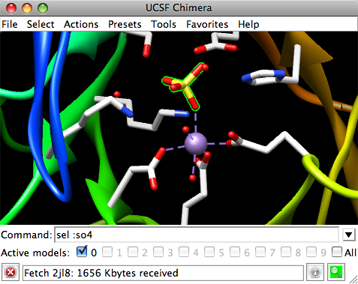
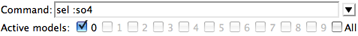
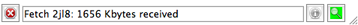

|  |
Molecular structures and other 3D data are displayed in the graphics window. The background color can be changed:
The Chimera window may also include a toolbar for icons, a command line, and a status line. The initial appearance of the window depends on any startup files and predefined preferences.
The
When fullscreen mode (Windows only) is specified with the startup option --fullscreen or in the General preferences, the graphics window without borders will occupy an entire screen. The menu bar and any other components (tool bar, command line, and status line) can then be opened as a separate window with the F2 key, or just a pop-up menu can be used.
|  |
Chimera commands are entered at the Command Line. There are several ways to start the Command Line, a tool in the General Controls category. Command targets are indicated with atom specification strings, which can include names, properties, zones, and combinations of these.
Ctrl-u erases the command line contents; the list of past commands can be traversed with up arrow and down arrow or Ctrl-p and Ctrl-n.
The black inverted triangle to the right of the command entry field marks a pulldown menu. The menu includes:
Below the command entry area, the number of each open model is shown in bold and a checkbox shows whether the model is activated for motion. Clicking the box toggles between the activated (default) and deactivated states. Checking All activates all open models. Model activation status can also be controlled in the Model Panel and with the command select.
|  |
The display of a line for status messages can be controlled in the Messages preferences and the Keyboard Shortcuts dialog. Icons may be present and colored or grayed out depending on the situation:
 the red stop icon appears on the left when a foreground task
is running; clicking it aborts the task
the red stop icon appears on the left when a foreground task
is running; clicking it aborts the task